R quick reference card
Table of Contents
- R reference card
- Style
- Emacs key bindings
- 0. Overview of R
- 1. Getting started and getting help
- 2. Some basics
- 3. Navigating the software
- 5. Data structures
- Control structures
- Writing functions
-
4. Input and output
- Getting the current working directory
- Creating, opening and closing connections
- Reading tabular data files
- Writing tabular data files
- Reading from CSV files
- Reading from Excel files
- Reading files from the Internet
- Reading files with a complex structure
- Reading from SQL Server databases
- Saving and transporting objects
- Further resources
- 12. Useful tricks
- 9. General statistics
-
6. Data transformations
- Fixing variable names
- Creating new variables
- Removing list elements using a condition
- Selecting rows and columns more easily
- Removing rows that contain NAs from a data frame
- Removing columns that contain NAs from a data frame
- Merging data frames by commun column
- Converting
- Applying a function to each list element
- Splitting a vector into groups
- Applying a function to every row/column
- Applying a function to groups of data
- Applying a function to parallel vectors or lists
- Checking on and removing inconsistent values
- 7. Strings and dates
- 8. Probability
- 10. Graphics
- 11. Linear regression and ANOVA
rank()
1 R reference card
Welcome to R reference card. It contains the reference documentation that describes how to perform data analysis using R.
2 Style
- R Internals manual, section 8. “R Coding Standards”
- R coding style guide
- R Coding Conventions
-
Google’s
R Style Guide
variable.name(preferred,variableNameaccepted)FunctionNamekConstantName
3 Emacs key bindings
3.1 References
3.2 Interacting with the ESS process
C-c C-z- XXX Jump back to script buffer.
3.3 Sending code to the ESS process
Primary process interaction commands:
C-RET- Send the current region or line to the ESS process and step to the next line of code.
C-M-x- Send the current region or function or paragraph to the ESS process.
C-c C-c- Send the current region or function or paragraph to the ESS process and step to the next line of code.
Ohter evaluation commands:
C-c C-n- Send the current line to the ESS process and step to the next line of code, skipping comments.
C-c C-r- Send the current region to the ESS process.
C-c C-f- Send the current function to the ESS process.
C-c C-p- Send the current paragraph (defined as continuous set of lines surrounded by a blank line at top and bottom) to the ESS process.
C-c C-b- Send the current buffer to the ESS process.
3.4 Editing objects and functions
C-c C-e C-d- Edit the code of an object.
C-c C-l- Load a file into the ESS process using
source().
3.5 Help
Help at your fingertips:
C-c C-d C-e- Describe object at point (press
C-eto cycle). C-c C-d C-a- ess-display-help-apropos
C-c C-d C-d- ess-display-help-on-object
C-c C-d C-v- ess-display-vignettes
C-c C-d C-w- ess-help-web-search
C-c C-d i- ess-display-package-index
C-c C-d o- ess-display-demos
3.6 Reading help files
C-c C-v- Display R help on an object (which has an help file) in Emacs, for example for the function call you’re currently writing.
Then:
l- Run example in R help page, line by line.
3.7 Completion
Completion of function arguments
ElDoc support: automatic display of function arguments in the echo area.
Integration with auto-complete package
Auto-completion of objects and arguments: http://www.emacswiki.org/emacs/ESSAuto-complete.
3.8 Developing with ESS
ESS tracebug
Tracebug highlighting of errors.
Breakpoints
C-c C-t C-b- Set breakpoint.
C-c C-t B- Set conditional breakpoint.
C-c C-t k- Kill breakpoint.
General debugging
C-c `- Show R traceback (display source locations).
C-c ~- Show call stack (display source locations).
C-c C-t C-e- Toggle error action (repeat to cycle).
C-c C-t C-d- Flag for debugging.
C-c C-t C-u- Unflag for debugging.
C-c C-t C-w- Use “ess-watch” while debugging to see variables change at each step, or even just at the prompt.
Navigation to errors
M-g n- Next error.
M-g p- Previous error.
Tracebug visual debugger
ESS developer
C-c C-t C-a- Add a package to your development list.
C-c C-t C-t- Toggle developer mode on and off.
C-c C-t l- ess-developer-load-package (this one is in ESS dev as yet)
3.9 Emacs general functionality
M-r from comint buffers is worth a wealth IMO.
I would add C-s and C-r to search in the help buffer and M-\ to indent
- probably the most used command of mine is imenu-anywhere.
(global-set-key (kbd “C-.”) ‘imenu-anywhere)
and you will be able to navigate to the definition of the symbol at point as long as the other file is open. This is like tag navigation but more convenient IMO. Both ido and helm interfaces are available.
- multiple processes. I think ESS handling of multiple processes is
pretty unique. Even in emacs realm you don’t see this that often.
C-c C-s ess-switch-process
Other nice tools ( probably not available in other editors):
C-c C-q + M-x R to quickly restart the process.
C-c . ess-set-style (different indentation under your fingertips)
C-c C-e i ess-install-library C-c C-e l ess-load-library
C-c C-e C-t ess-build-tags-for-directory (then use M-. to jump to definition) C-c C-e C-w ess-execute-screen-options
Also the ability to mix in other, general purpose Emacs tools:
paredit-mode to give me good shortcuts to navigate around and manipulate parentheses and braces, git-gutter-mode to keep tabs on lines I’ve changed in a file. M-/ to complete long words the second type I type them.
- INDENTATION.
- Navigation & execution of code, follow to R buffer
- In-session function editing. C-c C-e d and C-c C-e C-d can open file
versions of R functions. C-c C-e l sends same back.
4 0. Overview of R
5 1. Getting started and getting help
?function ?dataset package ? lattice library(help=lattice)
args(function)- Look at the arguments of a FUNCTION.
- (no term)
- (no term)
- R general mailing list
- (no term)
- Stack Overflow
6 2. Some basics
6.1 Print something
print(object)- Explicitly print out an object.
cat()- Concatenate together a set of strings and prints out the concatanated string (to a file or to the console).
6.2 Setting variables
<-- Assign a value to a variable.
6.3 Listing variables
ls(),ls.str()- Show objects in my workspace.
6.4 Deleting variables
rm()-
Remove objects from your workspace.
rm(list=ls()) # remove everything from the workspace
6.5 Computing basic statistics
mean()- Take the mean.
median()- Take the median.
cor()- Correlation function.
6.6 Creating sequences
n:m- Create an sequence of integers from
ntom(n<morn>m). seq(from, to, len)- Create a sequence of
lenequally spaced fractional numbers. rep(x, times)- Create a series of repeated values.
6.7 Operators
- ==
- Compare.
%in%- Test membership.
6.8 Defining a function
MyFunction <- function(x) { y <- norm(100) mean(y) }
7 3. Navigating the software
library(package)-
Load PACKAGE.
library(datasets) airquality data(dataset)- Load DATASET.
source("file.R")- Evaluate R code file.
7.1 Running a batch script
You may write a script containing R code:
#!/usr/bin/env Rscript argv <- commandArgs(TRUE) x <- as.numeric(argv[1]) # etc. png("graph.png", 500, 500) plot(graph) graphics.off()
8 5. Data structures
What is data?
- Population
- Set of items.
- Variable
-
Measurement or characteristic.
- Qualitative
- Can be defined by a label and have discrete values.
- Quantitative
- Measured on a numerical scale.
| Class | Example |
|---|---|
logical |
TRUE / FALSE |
integer |
1L (with explicit L
suffix) |
numeric |
0.5 or 1 (real
numbers) |
complex |
1+0i |
character |
“hello” (= lowest class) |
class()- Show the class of the object.
unclass(vector)- Strip out the class (see factors).
8.1 Vectors
Vectors are sets of elements of the same class.
When objects of different classes are mixed in a vector, coercion occurs behind the scene so that every element is of the same class (the “lowest common denominator” class).
c()- Create a vector of objects (that is, concatenate or combine things together).
vector(class, length)- Create an empty vector.
names()- Show or give a name to each element of a vector.
length()
8.2 Matrices
Matrices are vectors with 2 dimensions attached to them
(see dimension attribute).
They are constructed column-wise (vector inserted by column).
They can be created from vectors by adding a dimension attribute:
v <- 1:10 dim(v) <- c(2, 5) print(v)
| 1 | 3 | 5 | 7 | 9 |
| 2 | 4 | 6 | 8 | 10 |
They can be created by column-binding or row-binding.
matrix(nrow=x, ncol=y)- Create an empty matrix.
cbind()- Column-bind (if the row order matches; otherwise, use
merge). rbind()- Row-bind.
8.3 Arrays
Arrays are n-dimensional matrices.
array()- Create an array.
8.4 Lists
Lists are vectors of objects of possibly different classes.
The indexes of the elements of a list have double brackets around them.
list()- Construct a list.
8.5 Factors
Factors are qualitative variables used to represent categorical data, to store self-describing codes for labels (such as “male” and “female”, or “low”, “medium” and “high”).
Unordered or ordered.
factor(character vector)- Create a factor variable (with levels by alphabetical order).
levels(x)- Return the value of the levels.
8.6 Data frames
Data frames are used to store tabular data where each column can be of a different class: special type of list (of columns) where every element has the same length.
- Row = observation, column = variable
- Special attribute
row.names(every row has a name, or defaults to a sequence of integers) - Most often created by calling
read.table()orread.csv() - Create a data frame.
- Convert a data frame to a numeric matrix (forced coercion!).
- Tell the names of each column included in the data frame.
8.7 Vectorized operations (recycling rule)
Avoid writing loops (code is a lot simpler):
x + y # element-wise addition
Similar for the matrices:
x * y # element-wise multiplication x %*% y # true matrix multiplication
8.8 Selecting list elements or data frame columns by position (subsetting)
[[-
Extract a single element of a list (or a single column of
a data frame).
Can be used with computed indices.
Can extract nested elements of a list:
x[[1]][[3]] # same as: x[[c(1, 3)]] # third element of the first elementPartial matching allowed at the command-line:
x[["a", exact=FALSE]] # instead of: x[["aardvark"]] [-
Return an object of the same class as the original: a list
of elements (or a data frame built from multiple columns).
Extract multiple elements of a list:
x[c(1, 3)]Remove the first column:
df[, -1]
8.9 Selecting list elements or data frame columns by name (subsetting)
$-
Extract a single element of a list (or a single column of a data
frame) by name: you don’t have to remember where the
element is in the list.
x$bar # same as x[["bar"]]Can only be used with literal names.
Partial matching allowed at the command-line:
x$a # instead of: x$aardvark
8.10 Selecting data frame columns by position (subsetting)
Matrices can be subsetted with (row, col) type
indices.
Indices can also be missing:
x[i, ]- Row i.
x[, j]- Column j.
By default,
- a single element is retrieved as a vector of length 1 rather than a 1x1 matrix.
- a single column or a single row is retrieved as a vector, not as a matrix.
This can be turned off by setting drop = FALSE (don’t
drop the dimension).
9 Control structures
Control structures mentioned here are primarily useful for writing
programs. For command-line interactive work, the *apply
functions are more useful.
9.1 Conditional statements
if (condition) { ## do something } else { ## do something else }
Here, the entire if/else construct is all about
assigning a value to y:
y <- if(x > 3) { # x must be a scalar here, not a vector 10 } else { 0 }
9.2 Loops
for (i in 1:10) { # successive values from a sequence or vector ## do something } for (letter in x) { # take elements from the vector ## do something }
- seq_along(vector)
- Create an integer sequence that’s equal to the length of the input vector.
- seq_len(integer)
- Create an integer sequence that’s as long as the integer in input.
- nrow(dataset)
- Tell the number of rows.
- ncol(dataset)
- Tell the number of columns.
while (z >= 3 && z <= 10) { # conditions are always evaluated from left to right ## do something }
Initiate an infinite loop:
repeat { ## do something if(<condition>) { break # only way to exit a repeat loop } }
break- Break the iteration of a loop.
next- Skip an iteration of a loop.
return- Exit an entire function and return a given value.
Better to use a for loop with an hard limit on the
number of iterations that it’s allowed to run.
10 Writing functions
- Functions are R objects of class
functionF <- function(arguments) { # Function documentation. ## do something }
- Functions can be passed as arguments to other functions
- Functions can be nested, so that you can define a function inside of another function (implications: see lexical scoping)
- The return value of a function is the last expression in the function body to be evaluated
- 3 types of…
- formal argument
- local variable
- free variable
10.1 Arguments
- Named arguments can potentially have default values (useful: not every function call makes use of all the formal arguments; some can be missing)
- The formal arguments are the arguments included in the function definition
formals()returns a list of all the formal arguments of a function- Arguments can be matched positionally or by name
- When an argument is matched by name, it is “taken out” of the argument list and the remaining unnamed arguments are matched in the order that they are listed in the function definition
- Named arguments help when:
- you want to use the defaults for evererything except for an argument near the end of the list
- you can’t remember the position of the argument
- Function arguments can also be partially matched
- Check for an exact match
- Check for a partial match
- Check for a positional match
- When defining a function, you can also set an argument value to
NULL(there is nothing there) - Arguments to functions are evaluated lazily (only when needed to be evaluated
- The
...argument indicates a variable number of arguments- Used when extending a function and you don’t want to copy the entire argument list of the original function
- Used by generic functions (such as
mean) so that extra arguments can be passed to methods - Used when the number of arguments cannot be known in
advance (see
pastefunction) - Any argument that appears after the
...must be named explicitly and cannot be partially matched
10.2 Scoping rules for R
- R searches through the search list (a series of
environments, an environment being a collection of symbol/value pairs) to bind the appropriate value to a symbol:- Search the global environment
.GlobalEnv(always the first) - Search the namespaces of each of the packages on the search
list
search() # find the search list - Search the
basepackage (always the last element)
- Search the global environment
- Last loaded package gets put in position 2 of the search list and everything else gets shifted
- Separate namespaces for functions and non-function objects
- R uses lexical (or static) scoping
(instead of dynamic scoping): the value of free variables
are searched for in the environment in which the function
was defined (until the empty environment, after the
basepackage)- With dynamic scoping, the value of free variables is looked up in the environment from which the function was called (calling environment = parent frame) – see slide 24 of “Scoping Rules for R” for a comparative example
- Other languages that support lexical scoping: Scheme, Perl, Python, Common Lisp
- Consequences: all objects must be stored in memory, and all functions must carry a pointer to their respective defining environment
- Every environment has one parent environment (next thing down on the search list); it is possible for an environment to have mulitple “children”
- A function + an environment = a (function) closure
- In R (unlike C), you can have functions defined inside other
functions – in this case, the environment in which a function
is defined is the body of another function!
make.power <- function(n) { # "constructor" function pow <- function(x) { x^n # n is a free variable (not defined # inside pow) } pow # return function as return value }
This function returns another function as its value
cube <- make.power(3) square <- make.power(2)
- Functions:
- environment(f)
- parent.env(environment)
- next thing down on the search list
- ls(environment)
- list all the variables in the environment
- get(object, environment)
- get the value of an object inside an environment
11 4. Input and output
Types of files:
- Tab-delimited
- CSV
- Excel
- JSON
- HTML/XML
- Database
11.1 Getting the current working directory
getwd()- Figure out what your working directory is.
11.2 Creating, opening and closing connections
file()-
descriptionis the name of the fileopenis a code (read-only, write, append)
con <- file("./data/cameras.csv", "r") cameraData <- read.csv(con) close(con)
11.3 Reading tabular data files
read.table(file)-
Read tabular data file, create data frame.
Important arguments:
fileheadersep(defaults to the space)quotecolClasses(class of each column, also used to skip columns)nrowsskip(number of lines to skip from the beginning)comment.charstringsAsFactors(defaults toTRUE)
data <- read.table("./data/file.txt", header=T, sep="\t", quote="")
For large datasets:
- Set
comment.char= "" if there are no comments in your file. - Use the
colClassesargument.Quick and dirty way to figure out the classes of each column (if there aren’t any classes that you want to change from their defaults): read in the first rows, determine the classes from that, and then import the rest of the file.
tabSample <- read.table("datatable.txt", nrows=100) classes <- sapply(tabSample, class) tabAll <- read.table("datatanble.txt", colClasses=classes) # save time on importing data
- Set
nrowshelps with memory usage.
R equivalent of Linux cut (to read only certain
columns from a file):
whichCols <- rep("NULL", 28) # assuming 28 colums whichCols[c(1, 5, 28)] <- NA df <- read.table(file, colClasses=whichCols)
To call some shell script to do the column extraction and then
using read.table on its output:
df <- read.table(pipe("cut -f1,5,28 myFile.txt"))
11.4 Writing tabular data files
write.table()- Write data.
11.5 Reading from CSV files
read.csv(file)-
Read data from CSV file, create data frame.
header(defaults toTRUE)separator(defaults to comma)
data <- read.csv("./data/file.csv") read.csv(file.choose()) # pick a fileIt calls
read.tablewith some default values. To look at them, just look at the code ofread.csvby typingread.csvand hitting <enter> at your R command line). read.csv2(file)-
Read data from CSV file, create data frame.
header(defaults toTRUE)separator(defaults to;)
11.6 Reading from Excel files
read.xlsx(),read.xlsx2()- Read Excel files.
11.7 Reading files from the Internet
download.file()-
Download a file from the Internet.
Be sure to record when you downloaded.
fileUrl <- "http://..." download.file(fileUrl, destfile="./data/file.csv", method="curl")
11.8 Reading files with a complex structure
readLines()-
Read lines of text from a connection.
Connections can be made to:
file(most common)gzfile, file compressed withgzipbzfile, file compressed withbzip2url
Remember to close connections.
con <- url("http://scholar.google.com/citations") htmlCode <- readLines(con) close(con) # get data off webpages html3 <- htmlTreeParse("...") # find value of title tag xpathSApply(html3, "//title", xmlValue) # access parts of the table xpathSApply(html3, "//td[@id='col-citedby']", xmlValue)
11.9 Reading from SQL Server databases
library(RODBC) ## con <- odbcConnect("DSN", uid="username") ## con <- odbcDriverConnect("driver={SQL Server};server=hostname;database=dbname;trusted_connection=true") con <- odbcDriverConnect("driver={SQL Server};server=hostname;database=dbname;uid=username;pwd=password") sql <- "SELECT * FROM table" rows <- sqlQuery(con, sql) print(head(rows)) odbcClose(con)
11.10 Saving and transporting objects
Textual formats (potentially recoverable in case of corruption).
dput()- Deparse a single R object.
dump()- Can be used on multiple R objects.
11.11 Further resources
Packages:
httr- For working with HTTP connections.
RMySQL- For interfacing with mySQL.
bigmemory- For handling data larger than RAM.
foreign- For getting data into R from SAS, SPSS, Octave, etc.
12 12. Useful tricks
12.1 Peeking at your data
head()- Look at the first 6 rows.
tail()- Look at the last 6 rows.
str()-
Compactly display the internal structure
(classes, etc.) of an object.
Alternative to
summary().When applied to functions, show the arguments.
str(.Platform) # what is the operating system attributes()- Access (set or modify) the (list of) attributes of an object.
13 9. General statistics
13.1 Summarizing your data
range()-
Give the min and the max (vector of length 2) of the observations
(vector of numbers).
Useful to give the extremes of a range to the
xlimandylimarguments of an axis.yrange <- range(c(x1, x2, x3)) summary()- Produce a summary of the object.
13.2 Tabulating factors
table(f)-
Count the number of observations in each level
(only works on factors). Give a frequency of how
many levels there are.
unique(dfrm$f) length(unique(dfrm$f)) # how many unique values table(dfrm$f, useNA="ifany") # number of times each unique value appears # (show missing values as well)Relative frequencies:
tbl <- table(dfrm$f, useNA="ifany") tbl / sum(tbl)Use the
cutfunction to calculate tables with numeric values.f <- cut(dfrm$x, breaks=30) # use `labels' to give nice names table(f, useNA="ifany") table(f1, f2)-
Produce a contingency table (cross-tabulation).
table(dfrm$f1, dfrm$f2) # look at the relationship between f1 and f2
13.3 Testing categorical variables for independence
summary(table(f1, f2))
Conventionally, a p-value of less than 0.05 indicates that the variables are likely not independent (there is some connection between the variables).
13.4 Calculating quantiles (and quartiles) of a dataset
quantile(vec, na.rm=TRUE)
14 6. Data transformations
(Partial list of) munging operations (= key process)
- These steps must be recorded in their own R script
- 90% of your effort will often be spent here
Processed (tidy) data:
- Each variable forms a column.
- Each observation forms a row.
- Each table / file stores data about one kind of observation.
14.1 Fixing variable names
tolower(names(dfrm))
splitNames <- strsplit(names(dfrm), "\\.") # split at period in names firstElement <- function(x){x[1]} # select the 1st component of the vector sapply(splitNames, firstElement) # remove everything after the trailing dot
gsub("_", "", names(dfrm))
14.2 Creating new variables
dfrm$ranges <- ranges # add a variable to the data frame
14.3 Removing list elements using a condition
Subsetting by using 2 types of index:
- a numeric vector (
x[2],x[1:4]) - a logical vector (
x[x > "a"])
Create a logical vector:
u <- x > "a" x[u] # get all elements which are greater than "a"
Remove missing values (NA) from a list:
missing <- is.na(x) # logical vector y <- x[!missing] sum(y) # = sum(x, na.rm=TRUE)
The analogue of is.na for data frames is
complete.cases.
Take all the rows of a data frame where all the values are not missing:
nonmissing <- complete.cases(x)
x[nonmissing, ]
Take the subset of all objects (x and y)
that has no missing values:
bothnonmissing <- complete.cases(x, y) # logical vector x[bothnonmissing]
To drop columns by name in a data frame, you can use direct indexing (with booleans vectors) and then, simply reassign data:
tokeep <- !names(x) %in% c("remove1", "remove2") x <- x[, tokeep] # or... x <- x[, tokeep, drop=FALSE] # you will need this option to avoid # the conversion to an atomic vector if # there is only one column left
14.4 Selecting rows and columns more easily
Indexing approach.
dfrm[dfrm$var1 > 0 & dfrm$var2 > 0, c(1, 2)] # subset on var1 and var2 dfrm[dfrm$var1 > 0 | dfrm$var2 > 0, c(1, 2)] # subset on var1 or var2
Using the subset function.
subset(dfrm, select=c(var1, var2), subset=(var1 > 0 & var2 > 0)) subset(dfrm, select=c(var1, var2), subset=(var1 > 0 | var2 > 0))
Use the %in% operator to compare a variable to a list
of desired values.
Note that you do not quote the column names.
14.5 Removing rows that contain NAs from a data frame
14.6 Removing columns that contain NAs from a data frame
Get rid of any column that has one or more NAs.
df <- df[, colSums(is.na(df))==0]
14.7 Merging data frames by commun column
merge(df1, df2, by = "CustomerId")- Inner join.
merge(df1, df2, by = "CustomerId", all = TRUE)- Full outer join (all records from both tables).
merge(df1, df2, by = "CustomerId", all.x = TRUE)- Left outer join.
merge(df1, df2, by = "CustomerId", all.y = TRUE)- Right outer join.
merge(df1, df2, by = NULL)- Cross join.
Merge data sets.
mergedData <- merge(df1, df2, by.x="id1", by.y="id2", all=TRUE)
14.8 Converting
as.*()- Explicitly coerce from one class to another.
as.numeric()- Coerce the (
character) column to benumeric. as.Date("January 2, 2007", "%B %d, %Y")- “2007-01-02”
as.ts()- Convert to a time series object.
You can always convert variables between types.
dfrm$x <- as.factor(dfrm$x) # character to factor dfrm$x <- as.character(dfrm$x) # factor to character
Warning: To convert factors to numeric or integer, first convert to character. Converting factors directly to numeric or integer data can lead to unwanted outcomes. Always check the results of a conversion to make sure R did what you wanted.
Convert at once all the string columns to factors:
ind <- sapply(x, is.character) x[ind] <- lapply(x[ind], factor)
14.9 Applying a function to each list element
Alternative (to for loops) to apply a function
(or summary statistics).
lapply
Loop over a list and apply a function on each element. Always returns a list back (that is, not a simplified result).
- (coerced) list
X - function
FUN - other arguments you wanna pass to the function
...
x <- list(a=1:5, b=rnorm(10))
lapply(x, mean)
lapply(1:4, runif, min=0, max=10) # arguments passed through the `...'
Extract the first column of each matrix of a list:
lapply(x, function(x) x[, 1])
sapply
Same as lapply, but tries to “simplify” the
result in a much more compact format (put all the elements into a
vector or a matrix if that is possible, instead of
returning a list).
sapply(s, function(x) colMeans(x[, c("Ozone", "Solar.R", "Wind")]))
Pass na.rm argument to ColMeans to
remove the missing values before calculating the mean.
sapply(s, function(x) colMeans(x[, c("Ozone", "Solar.R", "Wind")], na.rm=TRUE))
14.10 Splitting a vector into groups
split(x, f)-
Take a vector, and split it into subpieces (the number of
groups identified by the levels of a factor variable).
Always return a list (of lists?) back.
drop = TRUE- Don’t keep the empty levels of the factor.
Auxiliary function, used in conjunction with functions like
lapplyorsapplyto apply a function to those individual groups.lapply(split(x, f), mean)Like
tapply, but without applying the summary statistics.Splitting a data frame (or other kinds of lists), and apply an anonymous function:
s <- split(airquality, airquality$Month) # split according to month lapply(s, function(x) colMeans(x[, c("Ozone", "Solar.R", "Wind")])
14.11 Applying a function to every row/column
apply(dfrm, margin, fun, ...)-
Apply a function over the margins of an array.
Often used to apply a function to the rows or columns of a matrix. Very useful if you wanna take summaries of matrices or higher-dimensional arrays (such as array of matrices).
MARGIN is an integer vector which indicates which margins should be “retained”:
- margin 1 = apply FUN for each row (dimension 1): preserve all the rows, eliminate all columns, get a vector of the number of rows
- margin 2 = for each column (dimension 2); first dimension has been eliminated
x <- matrix(rnorm(200), 20, 10) apply(x, 2, mean)x <- matrix(rnorm(200), 20, 10) apply(x, 1, quantile, probs=c(0.25, 0.75)) # no default value for `probs'Shortcut functions (much faster on large matrices):
rowSums=apply(x, 1, sum)rowMeans=apply(x, 1, mean)colSums=apply(x, 2, sum)colMeans=apply(x, 2, mean)
14.12 Applying a function to groups of data
tapply(x, index, fun)-
Short for “table apply”. Apply a function over
subsets of a vector:
- Splits up a vector into little groups (such as men and women, indicated by a factor),
- Applies a function to those groups and
- Brings the pieces back together.
Function may be anonymous.
Simplify = FALSEto get back a list (instead of an array).tapplyis one of the most useful commands you’ll ever need. For example, to calculate statistics ofxseparately for each group identified in the variablef:tapply(x, f, sum, simplify=FALSE) # = lapply(split(x, f), sum) tapply(x, f, mean) # = sapply(split(x, f), mean) tapply(x, f, length) interaction(f1, f2)-
Combines all the levels of the first factor with all the levels
of the second factor.
You can also use
aggregateto analyze groups defined by more than one categorical variable (e.g., month and year).
14.13 Applying a function to parallel vectors or lists
mapply-
Apply a function to the elements of multiple lists
in parallel (multivariate version of
lapply).For example, apply a function over 2 lists, where the elements of the first list go into one argument of the function, and the elements of the second list go into another argument of the function
Vectorizing a function (that doesn’t allow for vector arguments).
mapply(rnorm, 1:3, 1:3, 2) # fixed standard deviationis the same as
list(rnorm(1, 1, 2), rnorm(2, 2, 2), rnorm(3, 3, 2))
14.14 Checking on and removing inconsistent values
15 7. Strings and dates
15.1 Getting the length of a string
nchar()- Get the length of a string.
15.2 Concatenating strings
paste()- Concatenate a set of strings together to create one string or a vector of strings.
15.3 Regular expressions
For the moment, we assume pattern matching on ASCII strings…
Metacharacters:
^- Start of a line (or negation of a character class).
$- End of a line.
[]- Character classes.
.- Any character.
|- Or.
()- Subexpressions (alternatives or “remember” matched text).
?- Optional.
- \
- “Escape” the metacharacter.
+- Any number, including none.
*-
Any number, at least one – it is “greedy” so it always matches
the longest possible string that satisfies the regular
expression.
The greediness can be turned off with the
?metacharacter (make the regex “lazy”), as in:^s(.*?)s$ {}- Interval quantifiers (minimum, maximum).
These functions can take vector arguments.
grep-
Return the indices into the character vector where the
regex pattern matches (it won’t do anything).
i <- grep("regexp", vector) # get a set of indices j <- grep("anotherregexp", vector) # get another set of indices setdiff(i, j) # substract j elements from i when they are the same setdiff(j, i) # different resultSetting
value = TRUEreturns the actual elements of the character vector that match. grepl- Return a logical vector (
TRUE/FALSE) indicating which element matches (used for subsetting). regexpr-
Return the indices (integer vector) of the string where the
first match begins and the length of the match.
If I want to see what the match is, use
substr:regexpr("...", string) substr(string, start + length - 1)Useful in conjunction with
regmatcheswhich extracts the matches in the strings without having you to usesubstr.r <- regexpr("...", string) regmatches(string, r) gregexpr- Return all of the matches (“global”) in a given string.
sub- Replace the first match with another string (used to strip out stuff by replacing the match with nothing).
gsub-
Replace all of the matches with another string.
names(data)[i] <- gsub("-", ".", names(data)[i]) regexec-
Give the indices (list) for parenthesized sub-expressions.
If I want to see what the submatch is:
r <- regexpr("... (.*) ...", string) # find all the date fields m <- regmatches(string, r) # parse out dates <- sapply(m, function (x) x[2]) # extract the 2nd element of each list object dates <- as.Date(dates, "%B %d, %Y") # convert to date hist(dates, "month", freq=TRUE) # aggregate the dates by month and give an histogram
16 8. Probability
17 10. Graphics
2 systems:
base-
Graphics are constructed piecemeal by different function
calls; you can add things one by one:
- annotate (some of the points in) the plot,
- put some points on the canvas,
- draw a title,
- add some axis labels,
- add some colors,
- add a legend.
lattice- Graphics are constructed via a single function call: all options have to be specified at once (advantage: that allows R to calculate the necessary spacings, margins and font sizes).
Behavior:
- Base graphics functions have a “side effect”: they plot data directly to the graphics device.
- Lattice graphics functions return an object of the class
trellis(object designed for plotting).When you call Lattice functions, even if you don’t assign it to a “plot object”, the result will be auto-printed (generate the plot on the graphics device), so it will look like Lattice functions have a “side effect”
You cannot use functions from the base plotting system in a Lattice plot.
17.1 Base graphics
Make a plot
plot- Create a scatter plot (or another type of plot, depending on the class of the object being plotted).
barplot- Create a bar chart (analogue of an histogram for categorical data).
hist- Make an histogram showing the distribution of
the numeric vector
x. boxplot- Create a box-and-whisker plot of the
yvariable by the grouping variablex(usually afactor).
Create a scatter plot
plot(x)-
Plot the (numeric) data against the index (
1:N).data(iris) plot(sort(iris$Petal.Width), main="Distribution of petal widths", xlab="Rank", ylab="Width", col=as.integer(iris$Species)+1)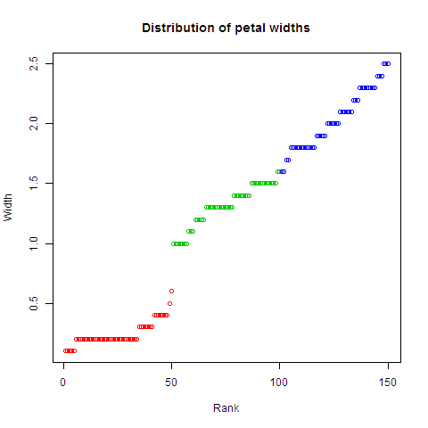
plot(x, y)-
Create a scatter plot of
xandy.data(iris) plot(iris$Petal.Length, iris$Petal.Width, main="Petals: Length vs Width", xlab="Length", ylab="Width", col=as.integer(iris$Species)+1)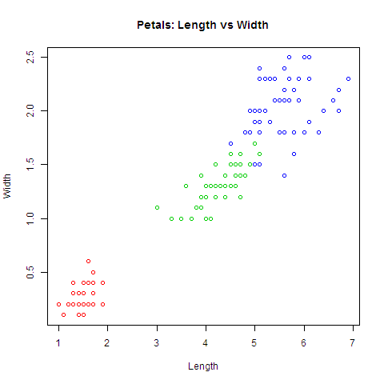
plot(x, y, type = "n")-
Set up the plot window, but don’t actually plot the data in
there.
Note that you have
POSIXctdates in your data frame… XXX plot(dfrm)-
Create multiple scatter plots if your data frame
contains more than 2 columns.
data(iris) plot(iris[, 1:4], main="Multiple scatter plots", col=as.integer(iris$Species)+1)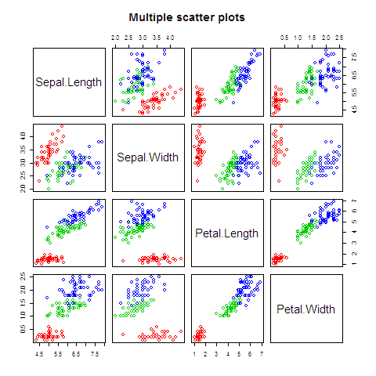
You can see that length and width appear strongly correlated. You could check the correlation between features with the
cor()function.data(iris) cor(iris[-5])1 -0.117569784133002 0.871753775886583 0.817941126271576 -0.117569784133002 1 -0.42844010433054 -0.366125932536439 0.871753775886583 -0.42844010433054 1 0.962865431402796 0.817941126271576 -0.366125932536439 0.962865431402796 1
hist
Histogram (distribution of data, frequency = exact number).
Generic function: you can call it on different types of data.
When you call hist on a Date object, it
requires an interval (“day” / “week” / “month” / “year”) in order
to break it up into sequences.
data(iris) hist(iris$Petal.Length, main="Histogram", col="lightblue") # shape of distribution
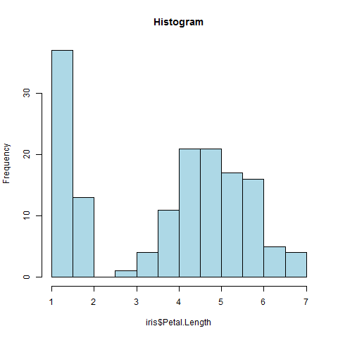
breaks is key: it specifies the number of
categories to plot or the breakpoints for each category.
data(iris) hist(iris$Petal.Length, breaks=seq(1, 7, by=0.1), main="Histogram", col="lightblue") # much more fine-grained distribution
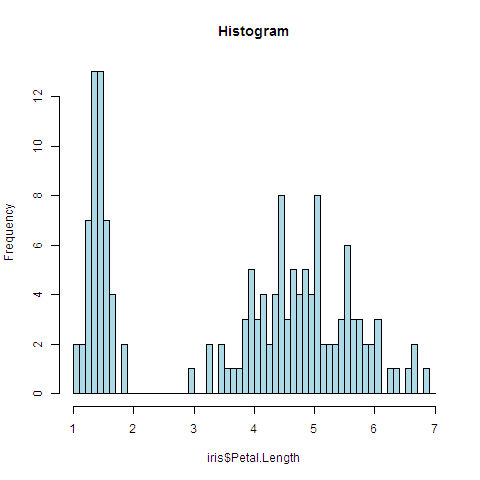
Can you explain the peculiar pattern? Graphical representations of data are useful at identifying these sorts of artifacts…
Report where the distribution is centered:
data(iris) hist(iris$Petal.Length, breaks=100, main="Histogram", col="lightblue") meanValue <- mean(iris$Petal.Length) lines(rep(meanValue, 100), seq(0, 100, length=100), col="red", lwd=5)
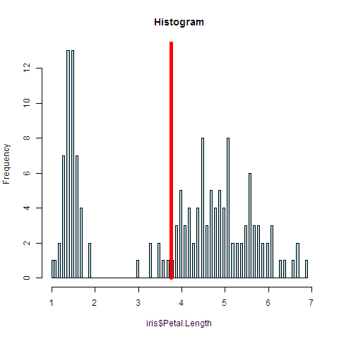
data(iris) plot(table(iris$Petal.Length), main="Table", col="blue")
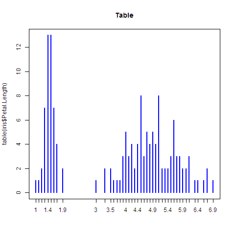
Note – In the table plot, x values with one occurrence (out of thousands) would be visible as one dot in the graphics. They don’t in the histogram (as the line, being too small, would be on the x-axis itself).
- Density plot (smoother histogram)
Density = percentage of observations
dens <- density(data$var) # smooth density function plot(dens, lwd=3, col="blue") # or: lines(dens, lwd=3, col="blue") after hist plot
Easy to compare multiple distributions:
# add another density densMales <- density(data$var[which(data$sex==1)]) lines(densMales, lwd=3, col="orange")
boxplot
boxplot draws plot summarizing:
- Median (wide line)
- Quartiles (Q1, Q3)
- Lowest data still within 1.5 * IQR (= Q3 - Q1) of the lower quartile, and the highest datum still within 1.5 * IQR of the upper quartile
- Outliers — By default, observations more than 1.5 * IQR distant from nearest quartile
data(iris) boxplot(iris[, 1:4], col=rainbow(4), main="Boxplot", ylab="Appropriate units")
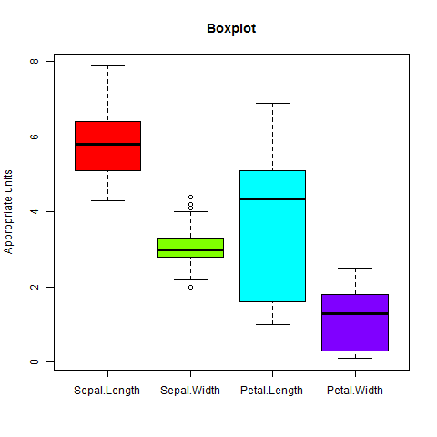
Add to an existing plot
points-
Add points to a plot (
colfor boundary color,bgfor fill color,pchfor plotting character).Plot points in groups separately.
data(iris) attach(iris) plot(Petal.Length, Petal.Width, type="n") points(Petal.Length[Species == "setosa"], Petal.Width[Species == "setosa"], col="red") points(Petal.Length[Species == "versicolor"], Petal.Width[Species == "versicolor"], col="green", pch=19) points(Petal.Length[Species == "virginica"], Petal.Width[Species == "virginica"], col="blue", pch=18)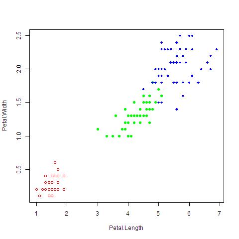
data(iris) plot(iris$Petal.Length, iris$Petal.Width, col=as.integer(iris$Species)+1)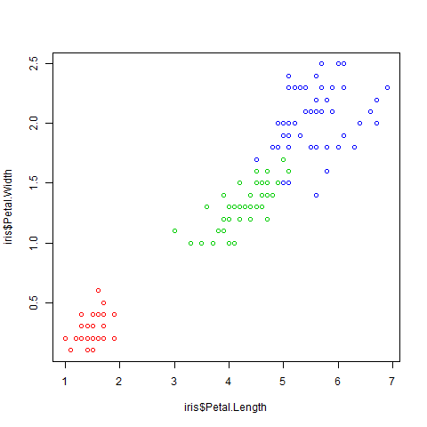
data(iris) plot(iris[, 3:4], col=c("red", "green", "blue")[unclass(iris$Species)])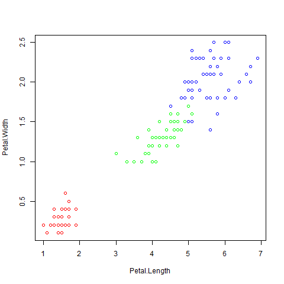
lines-
Add lines (connect all the dots) to a plot.
lines(x, y) # all linesEven better: option type="b” to plot method for both points and lines.
abline-
Add a straight line.
Plot the regression line of a scatter plot.
data(iris) attach(iris) plot(Petal.Length, Petal.Width) fit <- lm(Petal.Width ~ Petal.Length) abline(fit, lwd=3, col="blue")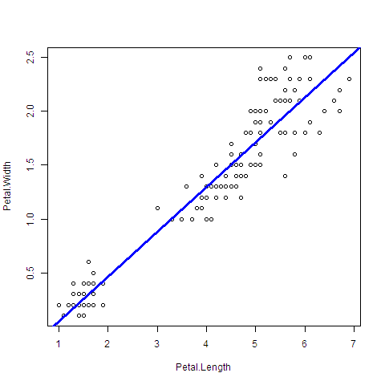
text-
Add text labels (inside the plot region).
Could be used to label datapoints.
text(-2, 2, "Label") title-
Add a title (or axis labels, subtitle, …).
title("plot") plot(x, y, xlab="Weight", ylab="Height", main="Scatterplot") mtext-
Add text to the margins.
mtext("Label on the X-axis", side=2, line=3, col="blue")Can be used to add multiline legends.
axis-
Annotate the axis (tick marks, labels).
axis(side=2, col="blue", col.axis="blue", las=1) legend-
Add a legend.
legend("topleft", legend="Data", pch=1)
Changing graphical parameters
par()-
control all the graphing parameters that you can specify
(defaults for all plots in a session, which can be
overridden as arguments to specific plotting functions).
pch- Plotting character (default: open circle symbol).
lty- Line type (default:
solidline). lwd- Line width.
col- Plotting color.
las- Orientation of the axis labels on the plot
(
las=2will set the tick labels to be perpendicular to the axis). bg- Background color (default:
transparent). mar-
Margin size (vector of 4 numbers, 1 per side).
par(mar=c(2, 2, 1, 1)) oma- Outer margin size (relevant if you have more than one plot per canvas).
mfrow-
Number of plots per row and per column on the canvas
(filled row-wise).
par(mfrow=c(2, 1)) # 2 rows and 1 column plot(x, y) plot(x, z) mfcol- Number of plots per row and per column on the canvas (filled column-wise).
bty-
Type of “box” which is drawn around plots.
A value of ="n"= suppresses the box (same as
axes=FALSE).
Look at the defaults:
par("lty") ?Devices-
List graphical devices.
pdf- Vector format (very, very large for a graphic with 2 million points on it: specify information for every single object on the plot).
png- Bitmapped format (specify information for pixels), losless compression, but does not resize well.
jpeg- Lossy compression.
bitmap- If you’re running R in a batch mode (you can’t use the
pngandjpegfunctions).
- (no term)
-
Copy the plot to another device
dev.copy2pdf- copy a plot to PDF
17.2 Lattice graphics
17.3 ggplot2
See post of Antoine Lizée in http://stackoverflow.com/questions/5234117/how-to-drop-columns-by-name-in-a-data-frame for an excellent performance reporting.
17.4 Other graphics
Pareto diagrams
library(qcc) data(iris) pareto.chart(table(iris[iris$Species=="setosa", ]$Petal.Length))
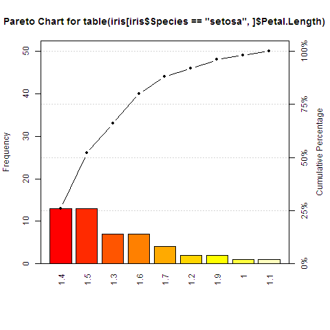
18 11. Linear regression and ANOVA
18.1 Regression tree models
- arbres de régression : la variable expliquée est de type numérique et il s’agit de prédire une valeur la plus proche possible de la vraie valeur.
18.2 Classification tree models
- arbres de classification : la variable expliquée est de type nominale (facteur). A chaque étape du partitionnement, on cherche à réduire l’impureté totale des deux noeuds fils par rapport au noeud père.
rpart